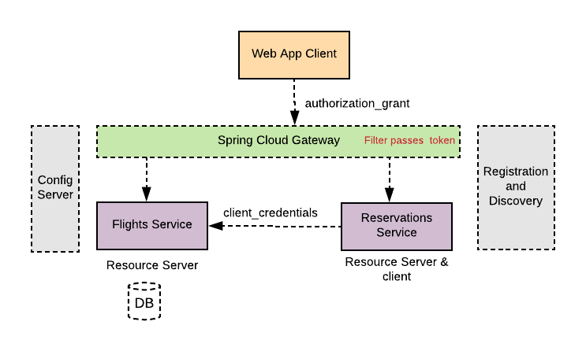

Spring framework provides a comprehensive and extensible support for authentication and authorization. Latest enhancements in Spring 5.x have made it simple to apply security standards such as OAuth2 to secure applications. In this blog I will demonstrate how to use OAuth2 second-generation support in Spring framework to secure a distributed microservices application.
Architecture
A simple “Flight Agency” demo application will be used in this blog to illustrate using the latest Spring 5.x security features of OAuth2 to support microservices authentication and authorization.
The architecture of the distributed demo application consists of a front-end web application and a couple of backend microservices. All modules of the application are implemented using Spring Boot to take advantage of the auto-configuration and opinionated features. As illustrated in the diagram below, The system consists of

-
Front-end Web application implemented using Tymeleaf. The application allows a user to search for a flight from an origin to a destination within certain dates, select and book the itinerary flights (called agency-web).
-
A back-end service to retrieve available itinerary flights (called flights-service).
-
A back-end service to perform reservations and book the itinerary (called reservations-service)
Additionally, the application demo uses common services implemented with Spring cloud (Spring Boot based), such as:
-
A configuration server to externalize and centralize microservices’ configurations.
-
A registration and discovery service using Spring Cloud Eureka implementation to help service to register and discover each other.
-
A Spring Cloud Gateway, as an edge proxy in front of the two backend services of flights and reservations.